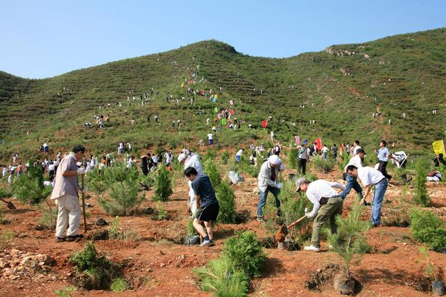
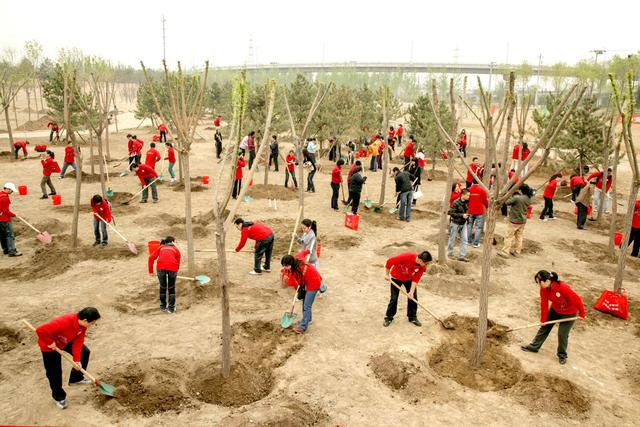

在3月12日中国植树节前夕，“你欠了多少棵树”的词条冲上微博热搜。不少人这才头一次知道：早在40年前，全国人大就作出决议，规定公民每年应植树3-5棵，其效力与法律等同。
为什么全国人大会对此做出规定？公民又该如何履行这项义务？北京日报客户端记者采访了首都绿化委员会办公室。
一场洪水引发的反思

2007年，首都各界群众在延庆八达岭参加义务植树活动
把时间拨回1981年夏，长江、黄河上游连降暴雨，河水猛涨，灾害之巨历史罕见。大灾之后，各层面都在进行反思。受灾最严重的四川、陕西两省主要领导，以及多位科学家都表示，江河上游森林植被的破坏是造成这次洪灾的一个重要原因。林业部门也组织力量，调研分析森林遭破坏的原因。
要尽快把森林资源保护起来，把荒山秃岭绿化起来！可资金有限、人力有限，要让全国数不清的濯濯童山绿起来，难度很大！
邓小平同志为荒山绿化打开了新思路。他在同万里同志的谈话中提到：“是否可以规定每年每人都要种几棵树，比如种三棵或五棵树，要包种包活。”
1981年12月13日，全国人大五届四次会议一致通过了《关于开展全民义务植树运动的决议》，规定凡是条件具备的地方，年满11岁的公民，除老弱病残者外，因地制宜，每人每年义务植树三至五棵，或者完成相应劳动量的育苗、管护和其他绿化任务。
义务植树成为靓丽风景

2009年，北京新婚夫妇在朝阳区参加共植“绿色家园爱之林'”为主题的义务植树活动.此后40年，人人动手，年年植树，成了中华大地的一道风景。
在首都北京，每年4月的第一个休息日被规定为“首都全民义务植树日”。每到那天，数不清的政府机关、工矿企业、学校医院都会组织起来，扛着铁锨水桶种树去！种树，也不容易。就拿北京市平原和山区交接处的“前山脸”地带来说，土层薄、裸石多，草木难以成活，是绿化造林的“硬骨头”。为此，北京探索爆破造林技术。
爆破造林，就是用爆破技术把坚石打碎，运客土上山，再栽植林木。用这种方式，西起房山张坊，东至平谷金海湖绵延230公里的前山脸地区，如今形成了五彩斑斓的高质量生态景观。义务植树运动开展40年来，首都北京已有超过1亿人次通过各种形式参加义务植树，植树2.1亿株。片片绿云环绕京城，“沙尘暴”已成为遥远的回忆。
公民去哪儿能植树尽责？
义务植树是一份历史担当。走过40年岁月，需要种树、适合种树的地方基本已披上了绿装，剩下的多是边角地或者偏僻的深山区，并不适合普通人跋山涉水赶过去。新形势下，公民如何履行义务、植树尽责？
自2017年起，首都绿化委员会办公室启动实施了北京“互联网+全民义务植树”基地体系建设。四年来，已建成各级基地共25处。义务植树也不再仅限于种树，而是共8类37种，包括造林绿化、抚育管护、自然保护、认种认养、设施修建、捐资捐物、志愿服务和其他形式。
全民义务植树网也开通了“网络参与”通道，通过网络捐款开展国土绿化、植树造林相关项目。以20元折算1株树的计算标准，只要捐资60元以上，就相当于履行了当年的植树义务。